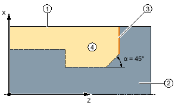
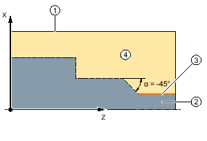
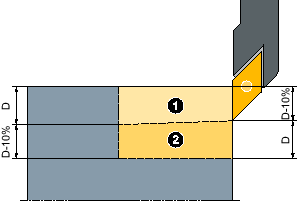
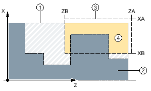
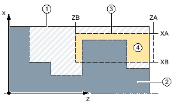

Function
You can use the "Stock removal" function to machine contours in the longitudinal or transverse direction or parallel to the contour.
Blank
For stock removal, the cycle takes into account a blank that can comprise a cylinder, an allowance on the finished part contour or any other blank contour. You must define a blank contour as a separate closed contour in advance of the finished part contour.
| Note |
|
In order to avoid collisions between tools and workpieces due to positioning motions, the programmed blank contour must match the real blank. |
If the blank and finished part contours do not intersect, the cycles defines the boundary between blank and finished part. If the angle between the straight line and the Z axis is greater than 1°, the boundary is placed at the top - and if the angle is less than or equal to 1°, the boundary is placed at the side.
 1: Boundary between unmachined and finished parts at the top">① | Blank |
② | Finished part |
③ | End of contour |
④ | Machining |
α > 1: Boundary between unmachined and finished parts at the top
① | Blank |
② | Finished part |
③ | End of contour |
④ | Machining |
α ≤ 1°: Boundary between unmachined and finished parts at the side
Requirement
For a G code program, at least one CYCLE62 is required before CYCLE952.
If CYCLE62 is only present once, then this involves the finished part contour.
If CYCLE62 is present twice, then the first call is the blank contour and the second call is the finished part contour (also see Section "Programming").
| Note |
Execution from external mediaIf you want to execute programs from an external drive (e.g. local drive or network drive), you require the "Execution from external storage (EES)" function. |
Rounding the contour
In order to avoid residual corners during roughing, you can enable the "Always round the contour" function. This will remove the protrusions that are always left at the end of the contour, due to the cut geometry. The "Round to the previous intersection" setting accelerates machining of the contour. However, any resulting residual corners will not be recognized or machined. Thus, it is imperative that you check the behavior before machining using the simulation.
When set to "automatic", rounding is always performed if the angle between the cutting edge and the contour exceeds a certain value. The angle is set in a machine data element.
| | Machine manufacturer Please observe the information provided by the machine manufacturer. |
Alternating cutting depth
Instead of working with constant cutting depth D, you can use an alternating cutting depth to vary the load on the tool edge. As a consequence you can increase the tool life.
① | First cut |
② | Second cut |
Alternating cutting depth
The percentage for the alternating cutting depth is saved in a machine data element.
| | Machine manufacturer Please observe the information provided by the machine manufacturer. |
Cut segmentation
To avoid the occurrence of very thin cuts in cut segmentation due to contour edges, you can align the cut segmentation to the contour edges. During machining the contour is then divided by the edges into individual sections and cut segmentation is performed separately for each section.
Set machining area limits
If, for example, you want to machine a certain area of the contour with a different tool, you can set machining area limits so that machining only takes place in the area of the contour you have selected. You can define between 1 and 4 limit lines.
The limit lines must not intersect the contour on the side facing the machining.
This limit has the same effect during roughing and finishing.
Example of the limit in longitudinal external machining
① | Blank |
② | Finished part |
③ | Limit |
④ | Machining |
Permitted limit: Limit line XA is outside the contour of the blank
① | Blank |
② | Finished part |
③ | Limit |
④ | Machining |
Impermissible limit: Limit line XA is inside the contour of the blank
Feedrate interruption
To prevent the occurrence of excessively long chips during machining, you can program a feedrate interruption. Parameter DI specifies the distance after which the feedrate interruption should occur.
The interruption time or retraction distance is defined in machine data.
| | Machine manufacturer Please observe the information provided by the machine manufacturer. |
Residual material machining / naming conventions
G code program
For multi-channel systems, cycles attach a "_C" and a two-digit, channel-specific number to the names of the programs to be generated, e.g. for channel 1 "_C01".
This is the reason why the name of the main program must not end with "_C" and a two-digit number. This is monitored by the cycles.
For programs with residual machining, when specifying the name for the file, which includes the updated blank contour, it must be ensured that this does not have the attached characters ("_C" and double-digit number).
For single-channel systems, cycles do not extend the name of the programs to be generated.
| Note |
G code programFor G code programs, the programs to be generated, which do not include any path data, are saved in the directory in which the main program is located. In this case, it must be ensured that programs, which already exist in the directory and which have the same name as the programs to be generated, are overwritten. |
Input simple
For simple machining operations, you have the option to reduce the wide variety of parameters to the most important parameters using the "Input" selection field. In this "Input simple" mode, the hidden parameters are allocated a fixed value that cannot be adjusted.
| | Machine manufacturer Various defined values can be pre-assigned using setting data. Please observe the information provided by the machine manufacturer. |
If the workpiece programming requires it, you can display and change all of the parameters using "Input complete".